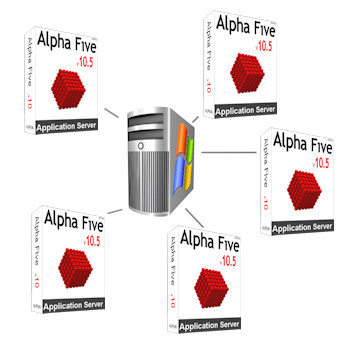
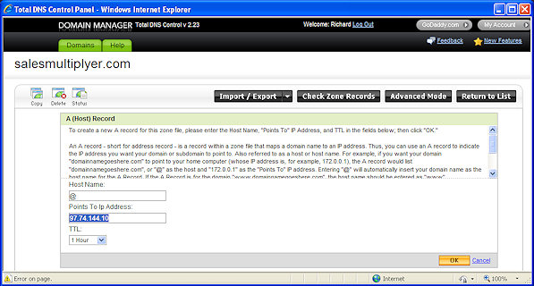
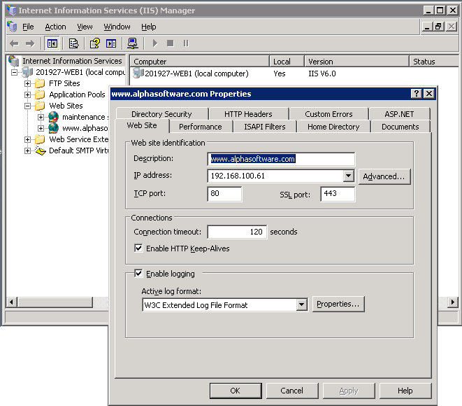
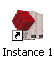
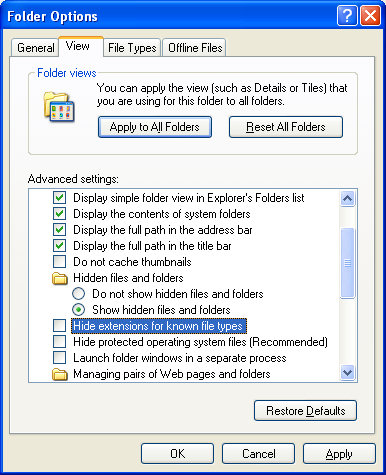
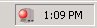
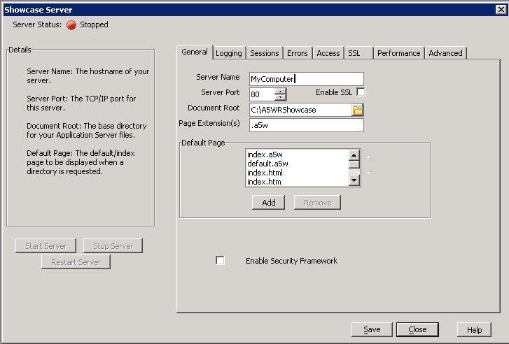
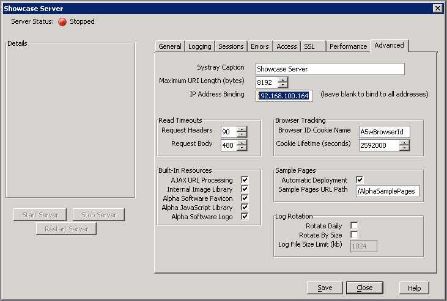
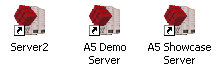
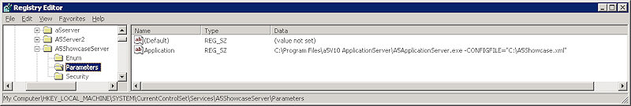

|  |
Running Multiple Instances of the
|
Setting up your windows box to run multiple instances of the Alpha Anywhere application server is not difficult if you know how. And that's where this document comes in. We'll look at the process step-by-step starting with this overview. (For brevity, we'll refer to the Alpha Anywhere Application Server, simply as "AFAS" in much of this document).
An Overview of Running Multiple Alpha Anywhere App Server Instances
At the high level, here are the steps needed to run multiple instances of the AFAS:
- Make a note of the IP addresses you have been assigned.
- Point your domain name system (DNS) server to the corresponding IPs.
- Configure Microsoft's IIS server so it doesn't conflict with the AFAS.
- Build a Windows Shortcut for each AFAS instance.
- Create a Configuration File for each instance.
- Wrap each instance up to run as a service.
Some of these steps may be optional depending on your setup. (For example if you don't plan to use the IIS web server, you can skip step 3.)
Step 1: Gather your IP Addresses
Quick review: An IP address is like a phone number that uniquely
identifies your computer on the Internet (or an intranet). For example, www.alphasoftware.com has a an IP of: 72.32.123.61. If you type http://72.32.126.61
has a an IP of: 72.32.123.61. If you type http://72.32.126.61 into your web
browser from practically anywhere in the world, you'll get to the Alpha Software website.
into your web
browser from practically anywhere in the world, you'll get to the Alpha Software website.
So in order to set up AFAS so that it can be seen on the Internet, you'll need an IP address for each instance of AFAS you plan to run. In addition, if you are planning on running Microsoft IIS as well - you will need an IP for that, too. IP addresses are assigned to you by your hosting provider. So, if you are hosting your server say at GoDaddy, GoDaddy will provide you with your IP addresses.
Of course people don't normally type these numbers into their web browsers, they type in URLs like "www.alphasoftware.com" and a separate server called the DNS (domain name system) server looks up the request and then converts it to the correct IP address.
We'll talk about the DNS in the next step, for now this is what you need to know. For each
separate instance of the AFAS you'll need a separate IP address and (optionally) a separate URL (like www.alphasoftware.com ).
You'll also need a different IP and URL if you are planning on using the IIS server as well.
).
You'll also need a different IP and URL if you are planning on using the IIS server as well.
� Using the chart below as a guide, fill out the URLs and IPs you plan to use.
| URL | IP |
| www.alphasoftware.com | 72.32.123.61 |
Step 2: Point your DNS Servers to the Correct IPs
Quick Review: A DNS (Domain Name System) server coverts the URL a user types
into their browser, like www.alphasoftware.com , into a numerical IP address
so they can find your website.
, into a numerical IP address
so they can find your website.
For each URL you want to use, like say: www.alphasoftware.com , you're
going to need to point the domain to the correct IP address.
, you're
going to need to point the domain to the correct IP address.
Some hosting providers (like GoDaddy) provide a self-service interface
that lets you manager your domain names. Here is what their interface looks like:

This is just one example of an interface used to manage your domain. The interface
you use (unless you use GoDaddy) will be different. And in some cases your web hosting
provider (or whoever manages your DNS servers) may need to help you.
It may take a little while for the change to propogate - depending on
how long the TTL setting was set to before you changed the IP. TTL (or "time to live")
indicates the duration a specific IP address is good for - before it is
considered outdated information and needs to be looked up again.
Now that the DNS servers are pointed to the right IPs, it's
time to configure IIS so that it won't conflic with AFAS.
If you're not going to use IIS, you can skip the next step.
Step 3: Configure IIS to work with AFAS
Again, if you don't plan to use IIS - you can skip this
step. But many people (including Alpha Software) have
some legacy pages written in ASP that they would like to continue
to run rather than rewrite them as A5W pages.
To allow Alpha Anywhere and IIS to run together and both use
port 80 (which is the standard port for web traffic) - you'll need to
assign them to different IPs.
Set the IP address to use in the IIS Manager as shown below (except use YOUR IP address, not the one in the picture):

OK - in theory that should be all. But with IIS 6.0 there is a "gotcha". While IIS will
now only serve pages that are requested from this IP -
it still takes control of all the other IPs anyway so you can't
use them with the AFAS. (If you try to run the Alpha Anywhere Application Server on port 80, you'll
get a message saying that there is a conflict.)
However, Microsoft makes a free tool that fixes this problem. You can find complete instructions
in a support article on Microsoft's website. The article is called
Setting metabase property DisableSocketPooling has no effect.
(Don't let the long, technical title of this article scare you. The instructions are actually quite straightforward.)
Step 4: Build a Windows Shortcut for each AFAS instance
In this step we're going to build desktop shortcuts that
you can use to manually open new instances of the Alpha Anywhere server. Later on,
we'll set up AFAS to run automatically. But for now we'll start each instance
manually so that we can configure them.
This step assumes that you already have the Alpha Anywhere Application Server (AFAS) installed.
If you haven't installed AFAS, please do so now. The download link to AFAS can be
found here.
Once installed we're going to make a new shortcut to the program, and in that shortcut we're
going to specify the location of the configuration file in the shortcut.
- Right click on the Windows desktop and choose New > Shortcut from the right-click menu. The Create Shortcut wizard appears.
- In the Type the Location of the Item box, type C:\ and click Next.
- Give the shortcut a name, like "Instance 1" or "www.alphasoftware.com". The name will be used so you can differentiate between different instances.
- Click Finish. A new shortcut icon will appear on the desktop.
- Right click on the shortcut you just created and choose Properties from the right-click menu.
- In the Target Box, enter the following:
"C:\Program Files\a5V10 ApplicationServer\A5ApplicationServer.exe" -CONFIGFILE="C:\Config1.xml"
(The last part -CONFIGFILE="C:\Config1.xml" specifies the name and location of the server's configuration file. Here we've named it Config1.xml, but feel free to give it a different name and save it in a different location.) - In the Start In box, enter the following:
"C:\Program Files\a5V10 ApplicationServer" - Click OK to save your changes.
|  |
Now you can test the shortcut by double clicking on it. The AFAS splash screen should appear, and you should get an error saying that it can't find the configuration file. This error is normal because we haven't created a configuration file yet. That will happen in the next step. |
You will need a shortcut for each instance you plan to run.
Each shortcut should have a different configuration filename. A quick way to create multiple shortcuts is to make a copy of your first shortcut and paste it on the desktop. Then right-click on it and change its properties. You just need to change the name of the shortcut and the name of the XML file.
Step 5: Create the AFAS Configuration Files
In the last step, you created shortcuts for
each instance of the AFAS you wanted to run. However, when you launched one
of these shortcuts, you got an error telling you that the AFAS couldn't find
the configuration file.
Creating this file is quite easy. All you need to do is create a
blank text document and give it the filename you specified when you created the shortcut.
In our example, the configuration file we specified was C:\Config1.xml, so we'd create a new text
file called config1.xml using Windows Explorer. Here are the step-by-step instructions.
- Right click on the Windows Start menu and choose Explore to open Windows Explorer
- Navigate to the folder where you specified the configuration file would be. (In our example this was c:\)
- From the Tools Menu, choose Folder Options. The Folder Options dialog box appears.
- Click the View tab.
- Make sure that that the Hide Extensions for Known File Types checkbox is unchecked. (You need to see the file extensions)

- Click OK to close the Folder Options dialog box.
- From the File menu, choose New > Text Document.
- Give the new text document the name you specified earlier. (In our example, it was config.xml.) Windows Explorer will warn you that you are changing the file's extension.
You'll need to repeat this process for each instance. To save time, simply copy, paste and rename the configuration file you just created.
So what's the with all these configuration files anyway? Well AFAS
uses the configuration file to store its settings. Some of these settings include
what port to use, whether to to enable security, the location of the Webroot, and
what IP it should use.
To create these settings in the configuration file, you'll use
AFAS itself to do it for you.
- Double click on one of the desktop shortcuts you
created earlier. This time you should not receive any errors because you created
the configuration file. The AFAS icon appears in the system tray.

- Right-click on the AFAS icon and choose Configure Server.
The Configuration dialog box apppears.

Don't be alarmed that your dialog box doesn't read "Showcase Server" at the top of it. This name is determined by what you type into the Systray Caption box in a later step.
- In the Document root box, choose the location of the webroot for this server instance. (The webroot is where you keep your A5w pages, html pages, graphics and other files. It's the "public" folder that will be accesible via the Internet.)
- Check the Enable Security Framework checkbox.
- On the Sessions tab, enter the serial number you want to use for the server by clicking the Add button. (You'll need a different serial number for each instance.)
- Activate your license by clicking on the license to highlight it. Then click the Activate button.
- Click the Advanced tab.

- In the Systray Caption box, enter a name for this server instance, so
that you can easily identify later when you have multiple instances running. You might name it
after the URL that points to it. For example, we might have called this instance www.alphasoftware.com
")
- In the IP Address binding box, type in the IP address associated with this instance. This tells Alpha Anywhere only to serve pages to requests that come from this IP. (Refer back to step 1 where you wrote these down.)
- Click OK to save your settings.
You're almost done. Now it's time to test.
- Start the server by right-clicking on the AFAS icon in the system tray, and choose Start Server from the right-click menu.
- Open a web browser and type in http:// followed by the IP address for
the server and press Enter. In our example it was http://72.32.123.61.
If the webroot you specified above does not contain any files, you should get back a warning page telling you either that security files are incomplete or that directory browsing is not allowed. Either of these are indicators that you have set things up properly. And these warnings will disappear once you have published your files to the webroot.
If you get an error that says "Bad Header Request" it means that you have conflict with IIS, and you should check your work back in Section 3.
If you get no response back, it could mean that either you entered the wrong IP into the AFAS. But it could also be caused by a firewall preventing access to port 80. If your server is offsite at a hosting provider, you may need to ask them to open port 80 for you.
Once the changes to your DNS have taken affect, you should also be able to connect to the web server using its URL.
Repeat these steps to configure each instance you want to run.
Step 6: Running Each Instance as a Service
So far we have set up each instance so that they can be run manually by double clicking on
their corresponding shortcut icon.

However, that solution is not adequate if you want to keep the servers running
24/7. That's because when windows restarts (such as after a Windows update) the servers
are shut down, and you have to manually start them again.
The solution to that problem is to configure Windows so that your instances of AFAS run as services
(in the background) whenever the machine is reboot. Many AFAS users do this with a
3rd party tool called
AlwaysUp. However it can
also be done using a free tool from Microsoft.
Instructions for running Alpha Anywhere as a service can be found in the wiki.alphasoftware.com article
titled
How to run Alpha Anywhere as a service.
But take note that you will need to make two variations to those instructions in the article. First you are going
to need to create a service for each instance you want to run, and you should give them different names.
Second when it comes time to specify the location of the AFAS, you'll need to also specify
the configuration files to use.

In the example above, there are 3 instances defined in the
registry: A5Server, A5Server2, and A5Showcase Server. These were created using the command line: instsrv.exe INSTANCE NAME c:\srvmkr\srvany.exe, Where SERVICE NAME was
the name of the service we wanted to create.
This is explained in more detail
in this wiki article.
For your reference here is an example of the proper syntax to use when editing the registry:
C:\Program Files\a5V10 ApplicationServer\A5ApplicationServer.exe -CONFIGFILE="C:\A5Showcase.xml"
A Few Final Notes...
Congratulations! You have provisioned your server to run multiple
instances Alpha Anywhere. There is no strict upper limit to the number of instances you can run. At Alpha Software,
we currently run 5 instances along side IIS on a single server, and the performance is quite good.
In the introduction we said that you can run Alpha Anywhere on different cores of
a multi-core processor. The AFAS actually handles this for you. So if you have a Quad processor, the AFAS will determine
the best core of the four available cores to run on each time you start a new instance. Everything is handled automatically.